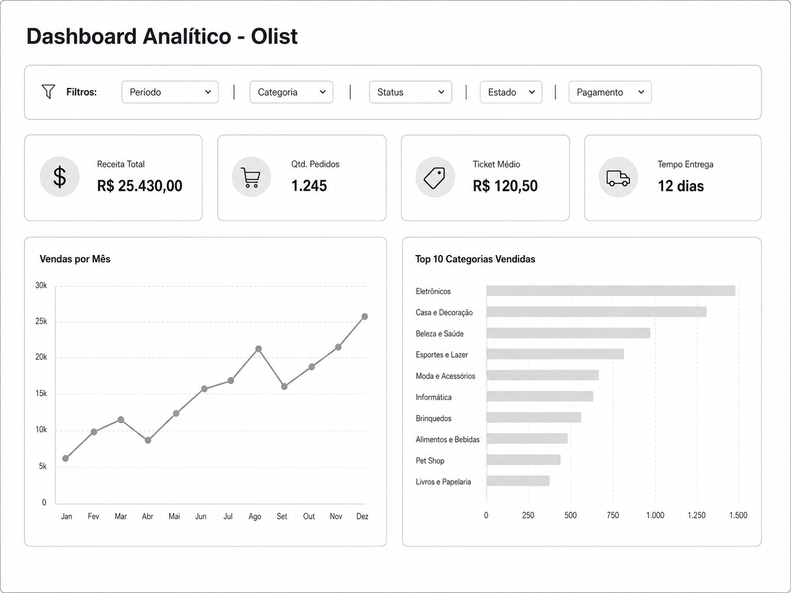

Requisitos do Dashboard Analítico¶
Objetivo¶
Desenvolver um dashboard analítico baseado no dataset público da Olist com foco na apresentação dos principais indicadores de desempenho do marketplace.
A proposta busca construir um painel simples, objetivo e visualmente organizado, permitindo que os usuários acompanhem os principais resultados do negócio sem excesso de informações.
Dashboard Proposto¶
O dashboard será desenvolvido seguindo o conceito One Page View, concentrando todos os elementos principais em uma única tela.
A primeira versão será composta por:
- 4 KPIs principais;
- 2 gráficos analíticos;
- Filtros básicos de navegação.
O foco da solução é apresentar informações relevantes de forma clara e direta.
Objetivos de Negócio¶
O dashboard deverá permitir o acompanhamento dos seguintes indicadores:
- Receita Total;
- Quantidade de Pedidos;
- Ticket Médio;
- Tempo Médio de Entrega;
- Evolução das Vendas;
- Categorias mais vendidas.
Base de Dados¶
As informações utilizadas serão provenientes das seguintes tabelas do dataset Olist:
| Tabela |
|---|
| olist_orders_dataset |
| olist_order_payments_dataset |
| olist_order_items_dataset |
| olist_products_dataset |
| product_category_name_translation |
| olist_customers_dataset |
Essas tabelas serão integradas na camada Gold do projeto para fornecer os dados necessários ao dashboard.
Indicadores (KPIs)¶
KPI 1 — Receita Total¶
Representa o valor total arrecadado com os pedidos.
Fonte¶
- olist_order_payments_dataset
Campo¶
- payment_value
Cálculo¶
Exemplo¶
KPI 2 — Quantidade de Pedidos¶
Representa o total de pedidos realizados.
Fonte¶
- olist_orders_dataset
Campo¶
- order_id
Cálculo¶
Exemplo¶
KPI 3 — Ticket Médio¶
Representa o valor médio gasto por pedido.
Fontes¶
- olist_order_payments_dataset
- olist_orders_dataset
Cálculo¶
Exemplo¶
KPI 4 — Tempo Médio de Entrega¶
Representa o tempo médio entre aprovação e entrega dos pedidos.
Fonte¶
- olist_orders_dataset
Campos¶
- order_approved_at
- order_delivered_customer_date
Cálculo¶
Exemplo¶
Visualizações¶
Gráfico 1 — Vendas por Mês¶
Apresenta a evolução das vendas ao longo do tempo.
Métrica¶
- Receita Total
Dimensão¶
- Mês
- Ano
Visualização¶
- Gráfico de linha
- Gráfico de colunas
Objetivo¶
Identificar tendências e sazonalidades nas vendas.
Gráfico 2 — Top 10 Categorias Vendidas¶
Apresenta as categorias com maior volume de vendas.
Métrica¶
- Quantidade vendida
Dimensão¶
- Categoria do produto
Visualização¶
- Gráfico de barras horizontais
Objetivo¶
Identificar os segmentos com maior participação nas vendas.
Filtros¶
O dashboard deverá disponibilizar filtros básicos para facilitar a análise dos dados.
Filtros previstos¶
- Período;
- Categoria;
- Status do Pedido;
- Estado do Cliente;
- Tipo de Pagamento.
Layout Proposto¶
O dashboard seguirá o modelo One Page View.
Estrutura¶
Cabeçalho
├── Título
└── Filtros
KPIs
├── Receita Total
├── Quantidade de Pedidos
├── Ticket Médio
└── Tempo Médio de Entrega
Gráficos
├── Vendas por Mês
└── Top 10 Categorias Vendidas
Esboço Inicial¶

¶Requisitos Funcionais¶
RF01 — Exibir Receita Total¶
O dashboard deve exibir a receita total considerando os filtros aplicados.
RF02 — Exibir Quantidade de Pedidos¶
O dashboard deve exibir a quantidade total de pedidos.
RF03 — Exibir Ticket Médio¶
O dashboard deve exibir o ticket médio dos pedidos.
RF04 — Exibir Tempo Médio de Entrega¶
O dashboard deve exibir o tempo médio de entrega dos pedidos.
RF05 — Exibir Vendas por Mês¶
O dashboard deve apresentar um gráfico contendo as vendas agrupadas por mês.
RF06 — Exibir Top 10 Categorias Vendidas¶
O dashboard deve apresentar um gráfico contendo as dez categorias mais vendidas.
RF07 — Permitir Aplicação de Filtros¶
O dashboard deve permitir a aplicação de filtros básicos aos KPIs e gráficos.
RF08 — Atualizar Dados Conforme Filtros¶
Ao aplicar filtros, os KPIs e gráficos devem ser recalculados automaticamente.
Observações¶
- O dashboard deverá ser simples e objetivo.
- Não serão incluídos gráficos adicionais na primeira versão.
- Os valores apresentados deverão ser provenientes da camada Gold.
- As métricas deverão estar alinhadas com as transformações implementadas no Data Warehouse.
Pontos para Validação¶
Antes da implementação definitiva, deverão ser validados os seguintes aspectos:
- Tratamento de pedidos cancelados;
- Regra de cálculo do tempo médio de entrega;
- Critério de ordenação do Top 10 Categorias;
- Disponibilidade dos filtros na camada Gold;
- Conformidade com o padrão visual definido para a disciplina.